컴퓨터응용밀링기능사 (2011-10-09 기출문제)
1과목: 기계재료 및 요소
1. 강의 담금질에서 나타나는 조직 중 경도가 가장 높은 조직은?
- 트루스타이트
- 마텐자이트
- 소르바이트
- 오스테나이트
(정답률: 58%)

2. 탄소강에 대한 설명으로 틀린 것은?
- 탄소강은 Fe와 Cu의 합금이다.
- 공석강, 아공석강, 과공석강으로 분류된다.
- Fe와 C의 합금으로 가단성을 가지고 있는 2원 합금이다.
- 코든 강의 기본이 되는 것으로 보통 탄소강으로 부른다.
(정답률: 54%)
3. 아래 그림은 기어열에서 이수가 ZA=30, ZB=50, ZC=20,ZD=40 일 때 I 축을 1000 rpm 으로 회전시키면 III축의 회전수는 몇 rpm 인가?
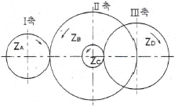
- 150
- 300
- 600
- 1200
(정답률: 43%)
4. 하중을 가했을 때 단위면적에 작용하는 힘의 크기를 무엇이라 하는가?
- 응력
- 변형률
- 탄성
- 소성
(정답률: 83%)
5. 플라스틱 재료의 공통된 성질로서 옳지 못한 것은?
- 열에 약하다.
- 내식성 및 보온성이 있다.
- 표면경도가 금속재료에 비해 강하다.
- 가공 및 성형이 용이하고 대량생산이 가능하다.
(정답률: 82%)
6. 다음 스프링 중에서 볼트의 머리와 중간재 사이 또는 너트와 중간재 사이에 사용하며 충격을 흡수하는 역할을 하는 것은?
- 와이어 스프링
- 토션바
- 와셔 스프링
- 벌류트 스프링
(정답률: 57%)
7. 결합용 기계요소가 아닌 것은?
- 축
- 핀
- 리벳
- 볼트
(정답률: 56%)
8. 88%의 Cu, 10% 의 Sn, 2%의 Zn이 함유된 합금으로 기계적 특성이나 내식성이 우수한 청동 합금은?
- 네이벌 황동(Naval brass)
- 애드미럴티 포금(Admiralty gun)
- 델타 메탈(Delta Metal)
- 레드 브레스(Red brass)
(정답률: 41%)
9. 용융상태의 주철에 마그네슘, 세륨, 칼슘 등을 첨가시켜 만든 주철은?
- 합금주철
- 구상흑연주철
- 칠드주철
- 가단주철
(정답률: 39%)
10. 웜 기어의 특징이 아닌 것은?
- 큰 감속비를 얻을 수 있다.
- 역회전을 방지하는 기능이 있다.
- 물림이 조용하다.
- 전동 효율이 높다.
(정답률: 28%)
11. 특수강에 일반적으로 사용되고 있는 중요한 합금 원소가 아닌 것은?
- Ni, Cr
- Cu, Hg
- W, Mo
- V, Co
(정답률: 53%)
12. 다음 중 Al 에 1~1.5%의 Mn을 함유하는 Al-Mn 계 합금으로 가공성, 용접성이 좋으므로 저장탱크, 기름탱크 등에 쓰이는 것은?
- 라우탈
- 두랄루민
- 알민
- Y합금
(정답률: 41%)
13. 내연기관과 같이 전달 토크의 변동이 많은 원동기에서 다른 기계로 동력을 전달하는 경우 또는 고속 회전으로 진동을 일으키는 경우에 베어링이나 축에 무리를 적게 하고 진동이나 충격을 완화시키기 위한 축이음은?
- 고정 커플링(fixed coupling)
- 플렉시블 커플링(flexible coupling)
- 올덤 커플링(oldham's coupling)
- 자재이음 (universal joint)
(정답률: 52%)
14. 초경 합금에 대한 설명으로 맞는 것은?
- 대표적인 절삭용 공구재료로서 일명 HSS(high speed steel)라. 함
- 알루미나(Al2O3)를 주성분으로 소결시킨 일종의 도기
- Co - Cr - W를 금형에 주조 연마한 합금
- 금속탄화물을 고압으로 성형, 소결시킨 분말 야금 합금
(정답률: 38%)
15. 그림과 같이 두께 4mm 인 강판을 한쪽 길이가 25mm 인 정사각형 구멍을 뚫기 위한 펀치의 전단 하중은 몇 kN인가?(단, 강판은 전단 응력이 300 N/㎟ 이상이면 전단된다)
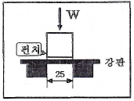
- 3
- 12
- 30
- 120
(정답률: 24%)
2과목: 기계제도(절삭부분)
16. 스프링의 제도에 관한 설명으로 틀린 것은?
- 코일 스프링의 종류와 모양만을 간략도로 나타내는 경우는 재료의 중심선만을 굵은 실선으로 도시한다.
- 코일 부분의 양끝을 제외한 동일모양 부분의 일부를 생략할 때는 생략한 부분의 선지름을 중심선의 굵은 2점 쇄선으로 도시한다.
- 코일 스프링은 일반적으로 무하중인 상태로 그린다.
- 그림안에 기입하기 힘든 사항은 요목표에 표시한다.
(정답률: 57%)
17. 기하공차의 종류 중에서 데이텀 없이 단독 형체로 기입할 수 있는 공차는?
- 위치 공차
- 자세 공차
- 모양 공차
- 흔들림 공차
(정답률: 49%)
18. 표면거칠기 기호를 기입할 때 가공방법의 지시 기호가 바르게 연결된 것은?
- D : 밀링가공
- S : 선반가공
- M : 연삭가공
- B : 보링가공
(정답률: 69%)
19. 맞물리는 1쌍의 기어의 간략도에서 보기의 기호는 어느 기어에 해당하는가?
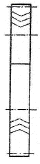
- 하이포이드 기어
- 이중 헬리컬 기어
- 스파이럴 베벨기어
- 스크루 기어
(정답률: 59%)
20. 상용하는 구멍 기준 끼워맞춤에서 다음 중 중간 끼워 맞춤에 해당하는 것은?
- H7/e7
- H7/k6
- H7/t6
- H7/r6
(정답률: 54%)
21. 다음의 입체도에서 화살표 방향으로 보았을 때 투상한 도면으로 가장 적합한 것은?
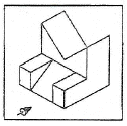
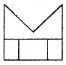
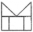
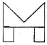
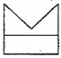
(정답률: 81%)
22. 보기 그림에서 대각선으로 나타낸 도면 중앙의 가는 실선 X 부분()의 설명으로 올바른 것은?
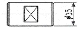
- 사각형의 관통된 구멍임을 뜻한다.
- 가공 완료 후의 열처리를 뜻한다.
- 가공 전의 모양이 다이아몬드형을 뜻한다.
- 가공 후의 모양이 평면임을 뜻한다.
(정답률: 66%)
23. 다음 공유압 기호 중 누름-당김 버튼 조작방식을 나타낸 것은?
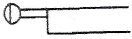
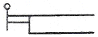
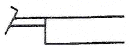
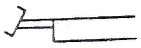
(정답률: 58%)
24. 기계제도에서 선의 굵기가 굵은 실선인 것은?
- 숨은선
- 지시선
- 외형선
- 해칭선
(정답률: 76%)
25. 기계 조립 도면에서 투상도의 일부분과 그 부분에 기입된 치수가 비례하지 않는 경우 이를 표시할 필요가 있을 때에는 어떻게 표시하는가?
- 치수 위에 굵은 실선을 긋는다.
- 치수 아래쪽에 굵은 실선을 긋는다.
- 다른 치수 보다 더 굵게 기입한다.
- 다른 치수 보다 더 크게 기입힌다.
(정답률: 58%)
26. 보통 선반에서 사용하는 센터(center)에 관한 설명으로 틀린 것은?
- 공작물을 지지하는 부속 장치로 탄소강, 고속도강, 특수 공구강으로 제작 후 열처리하여 사용한다.
- 주축에 삽입하여 사용하는 회전 센터와 심압대 축에 삼입하는 정지 센터가 있다.
- 주축이나 심압축 구멍, 센터 자루 부분을 쟈르노 테이퍼로 되어 있다.
- 선단의 각도는 주로 60° 이나 대형 공작물에선 75° 나 90° 가 사용된다.
(정답률: 42%)
27. 구성인선(built-up edge)에 대한 설명으로 틀린 것은?
- 발생시 표면거칠기가 불향하게 된다.
- 발생과정은 발생→성장→최대성장→분열→탈락 순서이다.
- 공구의 윗면 경사각을 작게 하고 절삭속도를 크게 하여 방지할 수 있다.
- 연성의 재료를 가공할 때 칩이 공구 선단에 융착되어 실제 절삭날의 역할을 하는 퇴적물이다.
(정답률: 57%)
28. 길이가 짧고 테이퍼 각이 큰 공작물을 테이퍼 가공하는데 가장 적합한 방법은?
- 심압대를 편위시키는 방법
- 테이퍼 절삭장치를 사용하는 방법
- 복식 공구대를 경사시키는 방법
- 총형 바이트를 이용하는 방법
(정답률: 44%)
29. 수평 밀링머신의 플레인 커터 작업에서 하향 절삭의 장점을 바르게 설명한 내용은?
- 커터 날이 일감을 밀어 올리므로 기계에 무리를 주지 않는다.
- 커터 날의 절삭 방향과 공작물의 이송 방향이 서로 반대이므로 백래시가 자연스럽게 없어진다.
- 커터 날에 마찰 작용이 적으므로 날의 마멸이 적고 수명이 길다.
- 절삭 침이 가공된 면에 쌓이지 않으므로 치수 정밀도가 좋다.
(정답률: 62%)
30. 다음은 어떤 측정기의 특징들에 대한 설명인가?
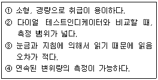
- 버니어 캘리퍼스
- 마이크로미터
- 한계 게이지
- 다이얼 게이지
(정답률: 50%)
3과목: 기계공작법
31. 래핑에서 마무리 다듬질에 사용되는 가장 적합한 랩제는?
- 알루미나
- 산화크롬
- 탄화규소
- 산화철
(정답률: 33%)
32. 밀링머신에서 정면커터로 공작물을 가공할 때, 절삭저항을 변화시키는 요소 중 가장 관련이 적은 것은?
- 가공물의 재질
- 절삭면적
- 절삭속도
- 밀링머신의 성능
(정답률: 66%)
33. 머시닝센터에서 지름이 100mm인 밀링 커터로 가공물을 절삭하려 할 때, 커터의 회전수는 몇 rpm으로 하여야 하는가?(단, 절삭속도는 100m/min 이다.)
- 259.5
- 256
- 318.3
- 312
(정답률: 53%)
34. 공구 마멸의 형태에서 윗면 경사각과 가장 밀접한 관계를 가지고 있는 것은?
- 플랭크 마멸(flank wear)
- 크레이터 마멸(crater wear)
- 치핑(chipping)
- 생크 마멸(shank wear)
(정답률: 54%)
35. 다음 중 구동 방법에 의한 3차원 측정기의 분류가 아닌 것은?
- 수동형
- 자동형
- 기어형
- 조이스틱형
(정답률: 41%)
36. 성형 연삭 작업을 할 때 숫돌바퀴의 질이 균일하지 못하거나 일감의 영향을 받아 숫돌바퀴의 형상이 변화되는데 이것을 정확한 형상으로 가공하는 작업을 무엇이라고 하는가?
- 드레싱
- 로딩
- 트루잉
- 그라인딩
(정답률: 47%)
37. 평면 연삭기의 크기를 나타내는 방법으로 틀린 것은?
- 테이블의 길이 × 폭
- 숫돌의 최대지름 × 폭
- 테이블의 무게 × 높이
- 테이블의 최대 이송거리
(정답률: 47%)
38. 선반의 종류별 용도에 대한 설명 중 틀린 것은?
- 정면 선반 : 길이가 짧고 지름이 큰 공작물 절삭에 사용
- 보통 선반 : 공작 기계 중에서 가장 많이 사용되는 범용 선반
- 탁상 선반 : 대형 공작물의 절삭에 사용
- 수직 선반 : 주축이 수직으로 되어 있으면 중향이 큰 공작물 가공에 사용
(정답률: 64%)
39. 드릴링 머신의 가공 방법 중에서 접시머리 나사의 머리부를 묻히게 하기 위해 원뿔자리를 만드는 작업은?
- 태핑
- 스폿 페이싱
- 카운터 싱킹
- 카운터 보링
(정답률: 63%)
40. 탭으로 암나사를 가공하기 위해서는 먼저 드릴로 구멍을 뚫고 탭 작업을 해야 하는데 M6×1.0의 탭을 가공하기 위한 드릴지름을 구하는 식으로 맞는 것은?(단, d = 드릴지름, M = 수나사의 바깥지름, P = 나사의 피치이다.)
- d = M × P
- d = M - P
- d = P - M
- d = M - 2P
(정답률: 46%)
4과목: CNC공작법 및 안전관리
41. 다음 중 공작기계의 일반적인 구비조건에 해당하지 않는 것은?
- 가공된 제품의 정밀도를 높여야 한다.
- 강성이 있고 가공 능률이 좋아야 한다.
- 융통성과 안전성이 있어야 한다.
- 동력손실과 유동성이 좋아야 한다.
(정답률: 73%)
42. 다음 중 절삭 유제의 사용 목적이 아닌 것은?
- 공작물의 열팽창 방지로 가공물의 치수 정밀도가 좋아 진다.
- 절삭유와 공작물의 마찰에 의한 칩의 흐름을 방해한다.
- 절삭저항이 감소하고 공구의 수명을 연장한다.
- 다듬질면의 상처를 방지하므로 다듬질면이 좋아진다.
(정답률: 76%)
43. 머시닝센터의 절대 좌표계를 나타내는 화면이다. 다음과 같은 설정화면의 좌표값으로 공구의 좌표값을 변경하고자 할 때 반자동(MDI)모드에 입력할 내용으로 적당한 것은?
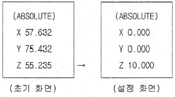
- G89 X0. Y0. Z10. ;
- G90 X0. Y0. Z10. ;
- G91 X0. Y0. Z10. ;
- G92 X0. Y0. Z10. ;
(정답률: 26%)
44. G96 S200 M03 ; 프로그램의 내용을 바르게 설명한 것은?
- 주축회전수 200rpm으로 주축 역회전
- 절삭속도 200m/min로 일정하게 주축 역회전
- 절삭속도 200m/min로 일정하게 주축 정회전
- 주축회전수 200rpm으로 주축 정회전
(정답률: 57%)
45. 공구 날끈 반경 보정에 관한 설명으로 틀린 것은?
- G40은 공구 날끝 반경 보정 취소이다.
- G41은 공구 날끝 좌측 보정이다.
- 공구 날끝 반경 보정을 하려면 인선(날끝) 반지름과 가상 인선 번호를 설정해야 한다.
- 직선이나. 테이퍼 가공에서는 공구 날끝 보정을 할 필요가 없다.
(정답률: 62%)
46. CNC선반에서 피치가 1.0mm인 2줄 나사를 가공할 때 이송 속도(F)는?
- F1.0
- F2.0
- F3.0
- F4.0
(정답률: 79%)
47. 다음 중 주물 제품과 같이 가공여유가 주어지고 모양이 형성되어 있는 부품을 가공하기에 가장 적합한 사이클은?
- G70
- G71
- G72
- G73
(정답률: 30%)
48. 다음 중 CAM(computer aided manufacturing)의 정보처리 흐름으로 올바른 것은?
- 도형정의 → 곡선 및 곡면의 정의 → NC코드 생성 → 공구경로 생성 → DNC 전송
- 도형정의 → 공구경로 생성 → NC코드 생성 → 곡선 및 곡면정의 → DNC 전송
- 도형정의 → 곡선 및 곡면정의 → 공구경로 생성 → NC코드 생성 → DNC 전송
- 곡선 및 곡면정의 → 도형정의 → NC코드 생성 → 공구경로 생성 → DNC 전송
(정답률: 53%)
49. 다음 CNC 프로그램에서 ①부분에 생략된 모달 G코드는?
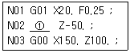
- G01
- G00
- G40
- G32
(정답률: 56%)
50. 지령 펄스의 주파수에 해당하는 속도와 위치까지 기계를 움직일 수 있으며, 현재는 정밀도가 낮아 CNC 공작기계에서는 거의 사용하지 않는 다음과 같은 서보기구는?
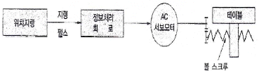
- 폐쇄 회로방식
- 반폐쇄 회로방식
- 개방 회로방식
- 하이브리드 서보방식
(정답률: 52%)
51. 드릴 작업시 주의할 사항으로 잘못 설명한 것은?
- 얇은 일감의 드릴 작업시 일감 밑에 나무 등을 놓고 작업한다.
- 드릴 작업시 면장갑을 끼지 않는다.
- 회전을 정지시킨 후 드릴을 고정한다.
- 작은 일감은 손으로 단단히 붙잡고 작업한다.
(정답률: 79%)
52. 날 수가 4개인 밀링 커터로 공작물을 1날당 0.1mm로 이송하여 절삭하는 경우 이송 속도는 몇 mm/min인가?(단, 주축 회전수는 500 rpm이다.)
- 80
- 150
- 200
- 250
(정답률: 56%)
53. 기계 원점(reference point)의 설명으로 틀린 것은?
- 기계원점은 기계상에 고정된 임의의 지점으로 프로그램 및 기계를 조작할 때 기준이 되는 위치이다.
- 모드 스위치를 자동 또는 반자동에 위치시키고 G28을 이용하여 각 축을 자동으로 기계 원점까지 복귀시킬 수 있다.
- 수동원점 복귀를 할 때는 모드 스위치를 급송에 위치시키고 조그(jog) 버튼을 이용하여 기계원점으로 복귀시킨다.
- CNC 선반에서 전원을 켰을 때 기계원점 복귀를 가장 먼저 실행하는 것이 좋다.
(정답률: 58%)
54. CNC 선반에서 원호 보간에 주어진 데이터가 시작점과 원호 중심과의 거리일 경우 지령 방법으로 옳은 것은?
- I, K
- R
- P
- Q
(정답률: 59%)
55. 그림에서 공구지름 보정이 틀린 것은?
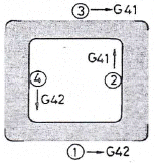
- ①
- ②
- ③
- ④
(정답률: 38%)
56. CNC 선반에서 지름(외경)30mm를 가공후 측정하였더니 29.7mm였다. 이때 공구 보정값을 얼마로 수정하여야 하는가?(단, 기존 보정량은 X4.3 Z5.4 이다.)
- X4.0 Z5.4
- X4.0 Z6.0
- X4.6 Z5.4
- X4.6 Z6.0
(정답률: 49%)
57. 다음은 머시닝센터에서 구멍 가공 모드를 설명한 것이다. 잘못 연결된 것은?
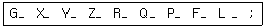
- Y - 구멍위치 데이터
- R - 가공 시작점 데이터
- P - 구멍 수량 데이터
- L - 반복횟수 데이터
(정답률: 38%)
58. 다음 NC기계의 안전에 관한 사항 중 틀린 것은?
- 절삭 칩의 제거는 브러시나 청소용 솔을 사용한다.
- 항상 비상버튼을 누를수 있도록 염두해 두어야 한다.
- 먼지나 칩 등 불순물을 제거하기 위해 강전반 및 NC유닛은 압축공기로 깨끗히 청소해야 한다.
- 강전반 및 NC 유닛문은 충격을 주지 말아야 한다.
(정답률: 75%)
59. CNC 기계의 일상 점검 중 매일 점검해야 할 사항은?
- 유량 점검
- 각부의 필터(filter) 점검
- 기계정도 검사
- 기계 레벨(수평) 점검
(정답률: 59%)
60. CAD/CAM 시스템의 이용 효과를 잘못 설명한 것은?
- 작업의 효율화와 합리화
- 생산성 향상 및 품질 향상
- 분석 능력 저하와 편집 능력의 증대
- 표준화 데이터의 구축과 표현력 증대
(정답률: 75%)